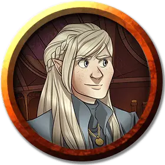

Портентия Дран
Portentia Dran
Средний Монстр (Перевёртыш), законно-злой, именной НИП

Класс Доспеха 17 (кольчужная рубаха)
Хиты 45 (6к8 + 18)
Скорость 30 футов
| мод | спас | ||
|---|---|---|---|
| СИЛ | 12 | +1 | +1 |
| ЛОВ | 18 | +4 | +4 |
| ТЕЛ | 16 | +3 | +3 |
| мод | спас | ||
|---|---|---|---|
| ИНТ | 13 | +1 | +1 |
| МДР | 12 | +1 | +1 |
| ХАР | 14 | +2 | +2 |
Навыки Восприятие +3, Обман +6, Проницательность +3
Иммунитет к состояниям очарование
Чувства тёмное зрение 60 футов, пассивное Восприятие 13
Языки Общий, Эльфийский
Опасность 3 (700 опыта)
Бонус мастерства +2
Особенности
Скрытая атака (1/ход). Портентия наносит дополнительный урон 14 (4к6), когда попадает по цели оружием и имеет преимущество на бросок атаки или когда цель в пределах 5 футов от союзника Портентии, являющегося дееспособным и у Портентии нет помехи к броску атаки.
Действия
Мультиатака. Портентия совершает три рукопашные атаки.
Короткий меч. Рукопашная атака оружием: +4 к попаданию, досягаемость 5 футов, одна цель. Попадание: 7 (1к6 + 4) рубящего урона.
Изменение внешности. Портентия волшебным образом превращается в гуманоида или зверя, у которого ПО равен или меньше её собственного, или возвращается в свою истинную форму. Любое снаряжение, которое она несёт или носит, поглощается или переносится на новую форму (по е выбору). В новой форме Портентия сохраняет свои игровые параметры и способность говорить, но её КД, особенности передвижения, Сила, Ловкость и особые чувства заменяются особенностями новой форме, и она получает любые параметры и особенности (кроме классовых умений, легендарных действий и действий логова), которые есть у новой формы, но которых нет у неё.
Описание
Нынешний владелец и движущая сила Dran Enterprises - возможно, самый заметный конкурент Acquisitions Incorporated в бизнесе, ориентированном на получение прибыли и власти, - Портентия Дран - нечто большее, чем кажется. В буквальном смысле. Человек, известный как Портентия, на самом деле является чейнджлингом, который занял место настоящей Портентии до того, как ей исполнилось пять лет.
Портентия-подменыш может принимать различные обличья и провела долгие годы, выполняя миссию по манипулированию членами семьи Дран. Много лет назад именно Портентия обманом заставила свою сестру Ауспицию исследовать глубины Блуждающего склепа. И она бы преуспела в организации того, чтобы это существо также претендовало и на жизнь Омина, если бы он немедленно не сбежал в поисках оружия, чтобы помочь своей захваченной сестре.
Будь то в бою или социальных столкновениях, Портентия часто переключается между различными формами и образами мышления, только некоторые из которых полностью гуманоидны. Она сражается, чтобы искалечить, с помощью жестокого боевого стиля, который подчеркивает неожиданность и болезненные действия. Она готова изменится под любую внешность или отношение, чтобы достичь своих целей. Но каковы эти цели - как для нее самой, так и для "Dran Enterprises" - остаются тайной, известной только ей.